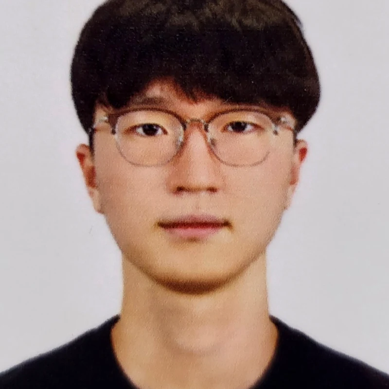

M.S. Student · MuLI Lab · SeoulTech
허세민
M.S. in Applied Artificial Intelligence,
Seoul National University of Science and Technology
Multimodal Learning and Intelligence (MuLI) Lab · advised by Prof. Seongeun Kim

I study continual learning and adaptation for audio-visual and multimodal systems — preserving previously acquired knowledge as available modalities and data environments change over time.
About
I am an M.S. student in Applied Artificial Intelligence at Seoul National University of Science and Technology (SeoulTech) and a member of the Multimodal Learning and Intelligence (MuLI) Lab, advised by Prof. Seongeun Kim.
My research focuses on continual learning and adaptation for audio-visual and multimodal systems. In particular, I study how models can preserve previously acquired unimodal knowledge and multimodal reasoning capabilities when available modalities and data domains change over time.
My previous work includes domain-agnostic audio continual learning, real-time crime detection through visual enhancement under adverse weather and low-light conditions, and meta-reinforcement learning for HIV treatment strategies that account for patient diversity.
Outside research, I enjoy mathematics, puzzles, and reading.
저는 서울과학기술대학교 인공지능응용학과 석사과정에 재학 중이며, Multimodal Learning and Intelligence 연구실에서 연구하고 있습니다. 시간에 따라 데이터 환경이나 사용 가능한 모달리티가 달라질 때, 인공지능 모델이 기존 지식을 잊지 않고 새로운 정보를 계속 학습하는 방법에 관심이 있습니다. 현재는 오디오와 비디오를 순차적으로 학습하는 멀티모달 시스템에서 단일 모달리티의 지식과 멀티모달 융합 능력을 함께 보존하는 방법을 연구하고 있습니다.
Research
Three threads, all asking the same question from different angles — how knowledge survives a shifting stream of modalities and domains.
This project studies continual learning for audio-visual systems when available modalities change sequentially over time. I investigate how models preserve unimodal knowledge and multimodal fusion capabilities while learning from audio-only, visual-only, and audio-visual tasks — without relying on task identifiers at inference time.
This work investigates domain-agnostic audio continual learning, where new acoustic domains arrive sequentially and domain labels are unavailable at inference time. We developed an accumulated branch ensemble that preserves previously learned branches while selecting or combining domain-specific predictions without explicit domain information.
Developed a domain-robust audio classification system using domain-specific experts, an entropy-based soft mixture-of-experts, and test-time adaptation for evaluation data with unknown domain labels.
Publications
Projects
Earlier undergraduate and side projects spanning vision, healthcare RL, and audio.
A real-time crime-behavior detection system combining visual enhancement under adverse weather and low-light conditions with video-based behavior recognition.
Meta-reinforcement learning for personalized HIV treatment strategies that adapt to heterogeneous patient dynamics.
Large-scale data-center power analysis: hourly time-series patterns across regions, contract power, and time-of-day, validated against real-world industrial data.
Ten-class musical-instrument classification comparing SVM, CNN, and pretrained audio representations over log-Mel and BEATs features, with multi-seed evaluation.
Teaching
Contact
Reach out about continual learning, audio-visual systems, or potential collaboration.